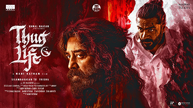
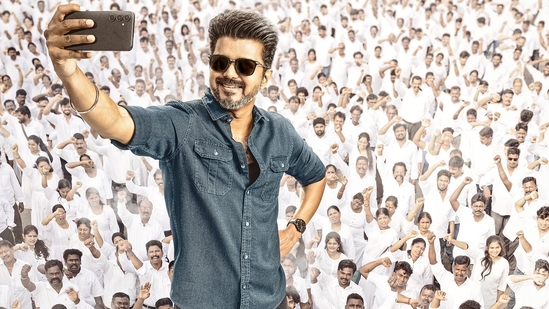

Ajith’s Good Bad Ugly has shattered Kollywood records by becoming the film teaser with the most views in 24 hours. Following Vidamuyalsi, Ajith’s next film to be released is Good Bad Ugly. Directed by Adhik Ravichandran, the film stars Trisha, Arjun Das, Prasanna, and others.The music for the film has been composed by GV Prakash Kumar, and it has been produced by Mythri Movie Makers. The film is set to be released in April, and its teaser was launched on March 1.Ajith’s playful references to old films and witty lines in the teaser won over fans. The teaser quickly gained massive attention, crossing 32 million views within 24 hours, making it the most-watched teaser in Tamil cinema history for that time frame. Previously, Vijay’s Master teaser held the record with 19.35 million views in 24 hours. Good Bad Ugly teaser has surpassed that record. Dhanush’s Captain Miller holds the third spot with 17.46 million views, while Vijay’s Sarkar comes in fourth with 14.92 million views.
There is a lot of anticipation among Rajinikanth's fans for his upcoming film Coolie. Directed by Lokesh Kanakaraj, the film is extra special because it will mark the onscreen reunion of Rajinikanth and Sathyaraj after 38 years. The two were last seen together in the superhit Tamil film Mr Bharath in 1986.
And now, Rajinikanth has shared a big update on the film.
On Tuesday morning, in a rare event, he was spotted at the Chennai airport on his way to Bangkok in order to finish the schedule of the Lokesh Kanagaraj directorial. He also interacted with the paparazzi woh stopped him to ask questions about Coolie.
When the paparazzi asked him what the update on Coolie is, he replied, "70% of the shooting is wrapped up. The current schedule is planned from January 13 to January 28."The action thriller features an ensemble cast, which includes Nagarjuna, Upendra, Soubin Shahir, Sathyaraj, Shruti Haasan, Rebe Monica John, and Junior MGR in important roles. According to reports, Bollywood actor Aamir Khan is also set to appear in a cameo role in the film.
The high-octane action thriller is Rajinikanth's 171st film and is based on gold smuggling. Director Lokesh Kanakaraj previously also clarified that this movie will be a standalone project, not part of his popular Lokesh Cinematic Universe (LCU).
With music composed by Anirudh Ravichander and cinematography by Girish Gangadharan, Coolie is produced by Kalanithi Maran's Sun Pictures
Kamal Haasan is gearing up for his upcoming film Thug Life, scheduled to hit theatres on June 5, 2025. The actor recently revealed certain details about Thug Life and the similarity to his iconic film Nayakan. When discussing the film, Haasan was careful not to say too much about the film and mentioned that director Mani Ratnam was concerned that divulging details may impact the audience’s experience. In a recent public appearance, he said, “In Nayakan, there was a question about whether the protagonist is a good person or bad." “Similarly, Thug Life explores the same theme. Even after watching the movie, you might realise that the protagonist is a mix of both good and evil," the actor added.For the unversed, Nayakan was released in the year 1987 and was the first collaboration between Mani Ratnam and Kamal Haasan. Alongside Haasan, the film also featured an ensemble cast including Saranya, Delhi Ganesh, Karthika, Nizhalgal Ravi, Nassar, Tinnu Anand and others in pivotal roles.The film chronicled the story of Sakthivel Naicker, a gangster. He began as a slum dweller and rose to become one of the most respected crime lords, who is loved and respected by many. It was based on the life of Bombay underworld don Varadarajan Mudaliar and was inspired by the Hollywood classic The Godfather 
We had earlier reported that Jana Nayagan is the title of the upcoming 69th film of actor Vijay, who has announced his full-time political entry soon. Jana Nayagan is touted to be the actor’s farewell film, with Vijay already focussing on his party Tamilaga Vettri Kazhagam political activities. Now, as per the latest reports, the shooting of Jana Nayagan is expected to get wrapped up by June. The film was announced to have an October 2025 release. However, now, the makers are looking for January 2026 window, right in time for Pongal. It is to be noted that if Jana Nayagan is indeed coming in 2026, it will also be the same year, Vijay’s party will be contesting in elections, making his debut.All we know about Jana Nayagan Apart from Vijay, the film also features Pooja Hegde as the female lead, reuniting with the actor for the second time after the 2022 action-drama Beast. Actors Priyamani, Mamitha Baiju, Bobby Deol, Gautham Menon, Prakash Raj, Narain, and others are also part of the film. 